{kind=link}
{kind=link}
{kind=link}

Pearson residuals, whole catch, MexCal_S1 (max=6.63)
Closed bubbles are positive residuals (observed > expected) and open bubbles are negative residuals (observed < expected).
file: comp_lenfit_residsflt1mkt0.png
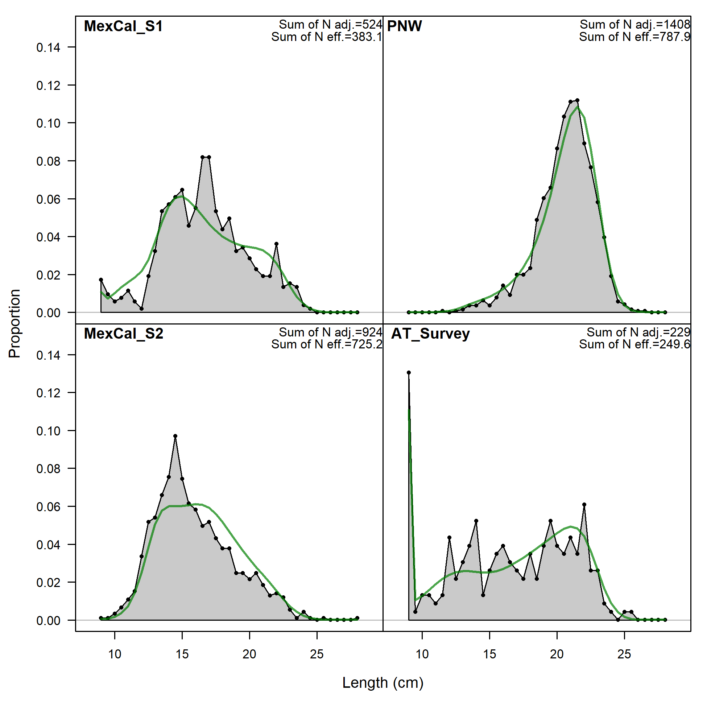
Length comps, aggregated across time by fleet.
Labels 'retained' and 'discard' indicate discarded or retained sampled for each fleet. Panels without this designation represent the whole catch.
file: comp_lenfit__aggregated_across_time.png
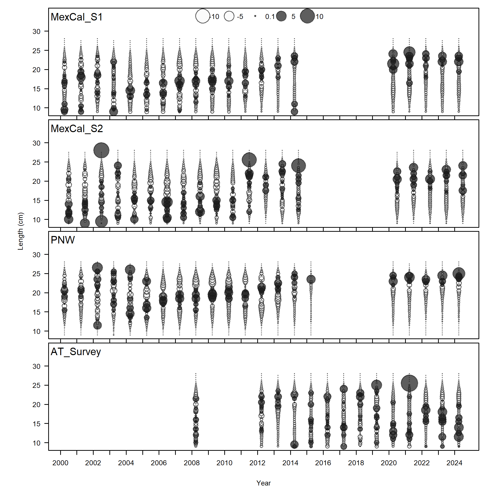
Pearson residuals, comparing across fleets
Closed bubbles are positive residuals (observed > expected) and open bubbles are negative residuals (observed < expected).
file: comp_lenfit__multi-fleet_comparison.png
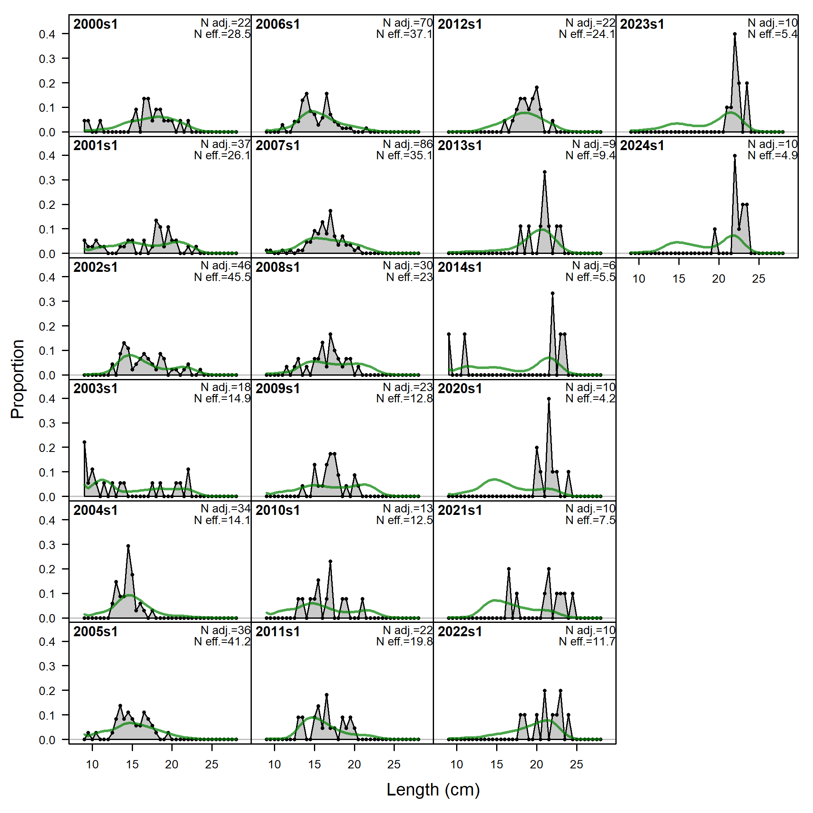
Length comps, whole catch, MexCal_S1.
'N adj.' is the input sample size after data-weighting adjustment. N eff. is the calculated effective sample size used in the McAllister-Ianelli tuning method.
file: comp_lenfit_flt1mkt0.png
Pearson residuals, whole catch, MexCal_S1 (max=6.63)
Closed bubbles are positive residuals (observed > expected) and open bubbles are negative residuals (observed < expected).
file: comp_lenfit_residsflt1mkt0.png
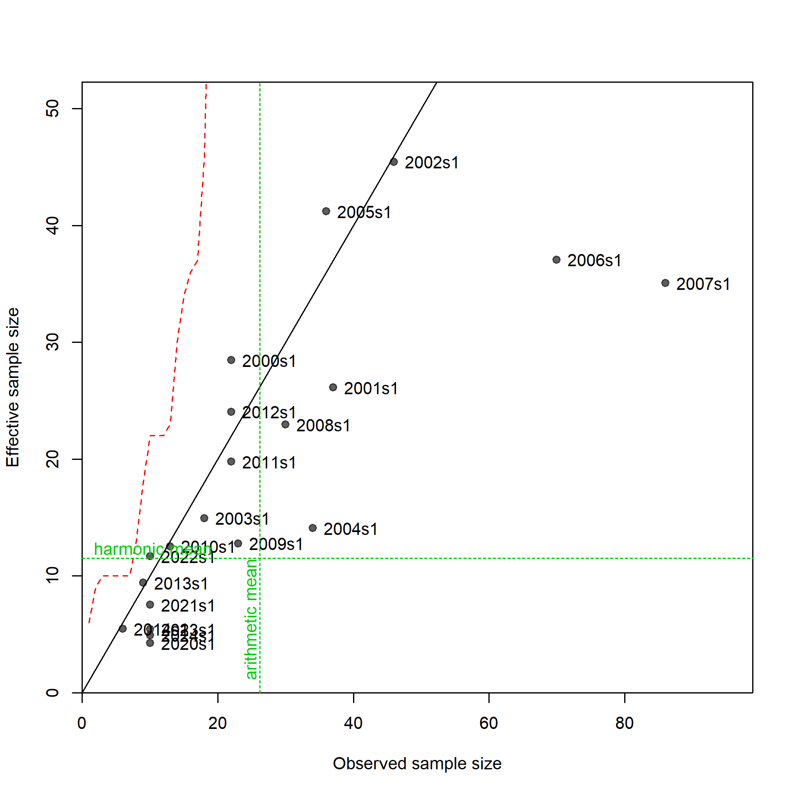
N-EffN comparison, Length comps, whole catch, MexCal_S1
file: comp_lenfit_sampsize_flt1mkt0.png
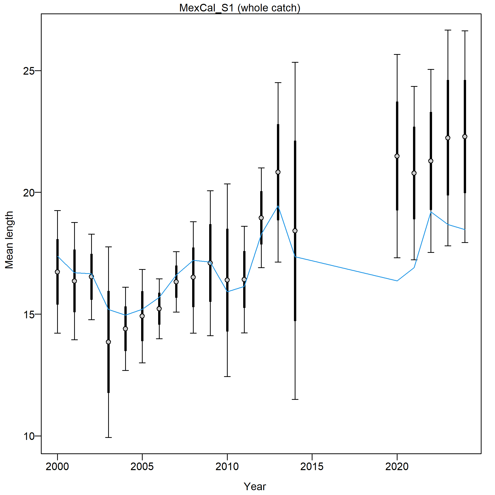
Mean length for MexCal_S1 with 95% confidence intervals based on current samples sizes.
Francis data weighting method TA1.8: thinner intervals (with capped ends) show result of further adjusting sample sizes based on suggested multiplier (with 95% interval) for len data from MexCal_S1:
0.2864 (0.1958-0.6569)
For more info, see
Francis, R.I.C.C. (2011). Data weighting in statistical fisheries stock assessment models. Can. J. Fish. Aquat. Sci. 68: 1124-1138. https://doi.org/10.1139/f2011-025
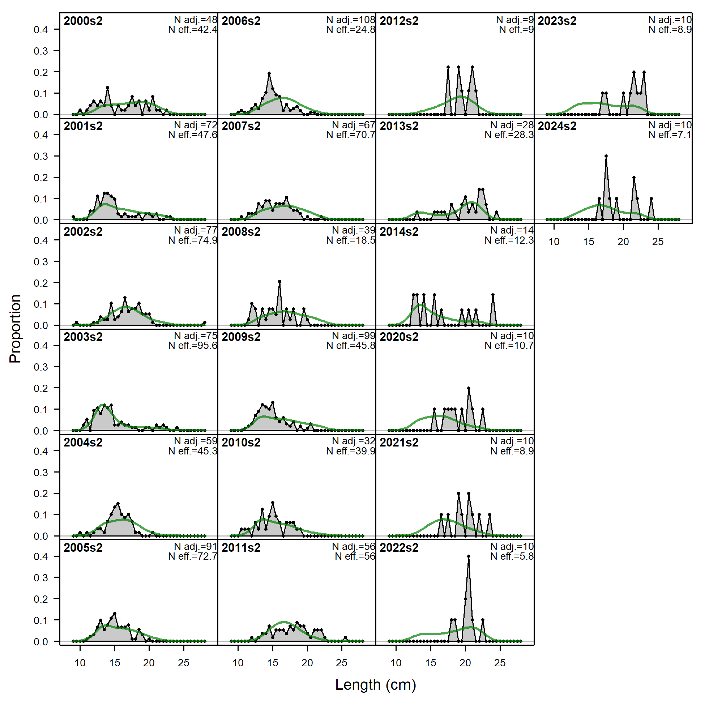
Length comps, whole catch, MexCal_S2.
'N adj.' is the input sample size after data-weighting adjustment. N eff. is the calculated effective sample size used in the McAllister-Ianelli tuning method.
file: comp_lenfit_flt2mkt0.png
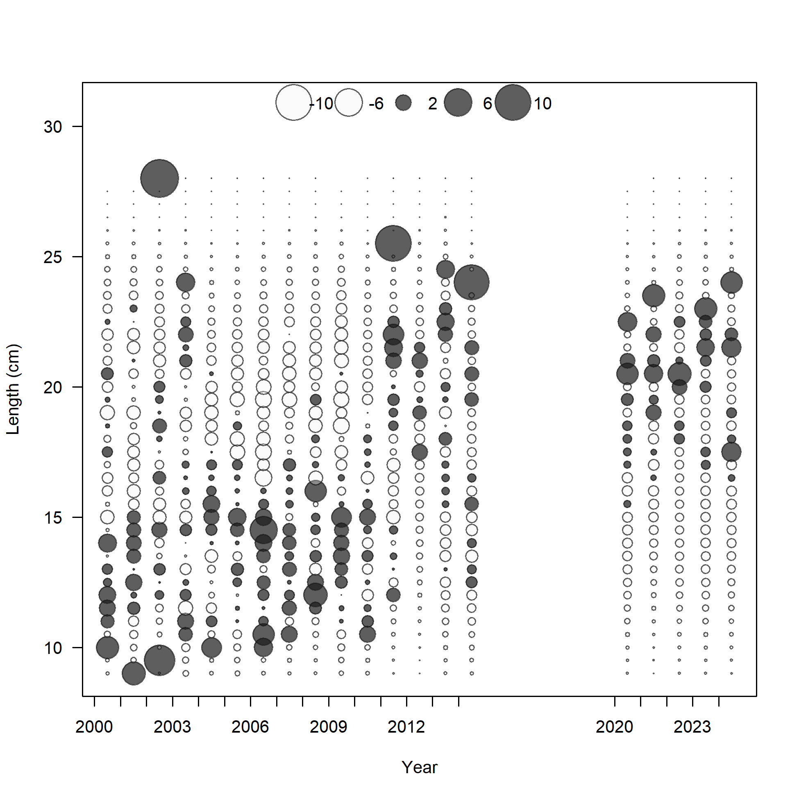
Pearson residuals, whole catch, MexCal_S2 (max=11.37)
Closed bubbles are positive residuals (observed > expected) and open bubbles are negative residuals (observed < expected).
file: comp_lenfit_residsflt2mkt0.png
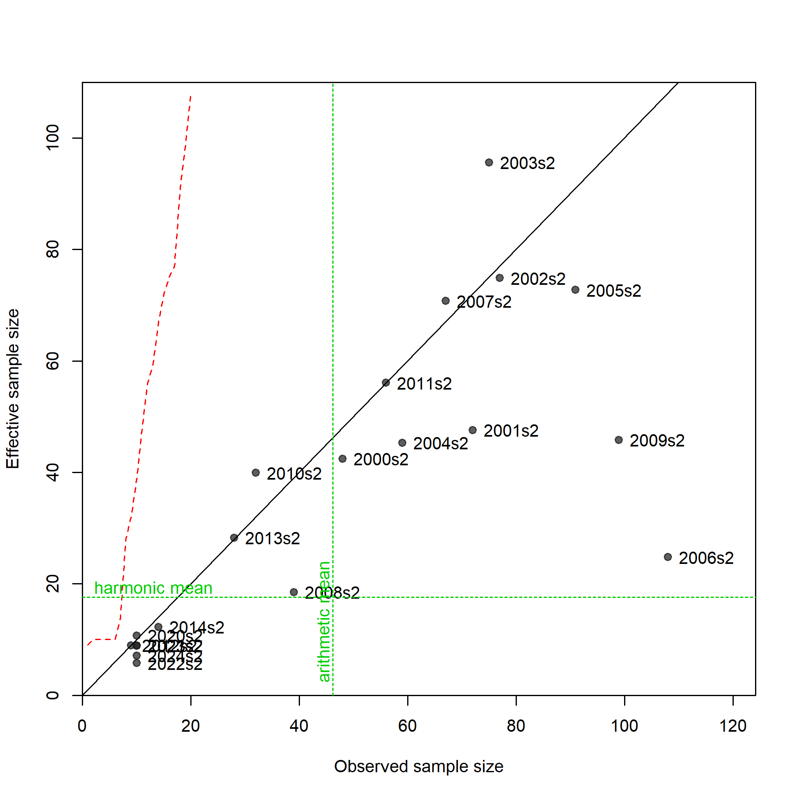
N-EffN comparison, Length comps, whole catch, MexCal_S2
file: comp_lenfit_sampsize_flt2mkt0.png

Mean length for MexCal_S2 with 95% confidence intervals based on current samples sizes.
Francis data weighting method TA1.8: thinner intervals (with capped ends) show result of further adjusting sample sizes based on suggested multiplier (with 95% interval) for len data from MexCal_S2:
0.1019 (0.0743-0.1813)
For more info, see
Francis, R.I.C.C. (2011). Data weighting in statistical fisheries stock assessment models. Can. J. Fish. Aquat. Sci. 68: 1124-1138. https://doi.org/10.1139/f2011-025
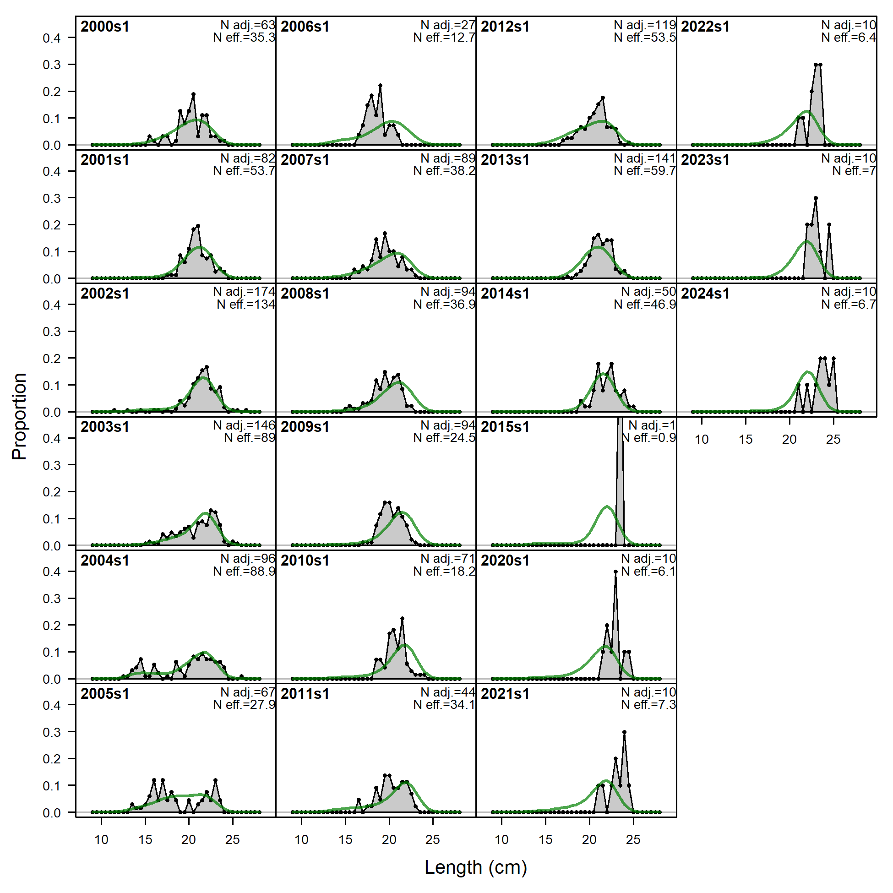
Length comps, whole catch, PNW.
'N adj.' is the input sample size after data-weighting adjustment. N eff. is the calculated effective sample size used in the McAllister-Ianelli tuning method.
file: comp_lenfit_flt3mkt0.png

Pearson residuals, whole catch, PNW (max=7.13)
Closed bubbles are positive residuals (observed > expected) and open bubbles are negative residuals (observed < expected).
file: comp_lenfit_residsflt3mkt0.png

N-EffN comparison, Length comps, whole catch, PNW
file: comp_lenfit_sampsize_flt3mkt0.png

Mean length for PNW with 95% confidence intervals based on current samples sizes.
Francis data weighting method TA1.8: thinner intervals (with capped ends) show result of further adjusting sample sizes based on suggested multiplier (with 95% interval) for len data from PNW:
0.1806 (0.1303-0.3284)
For more info, see
Francis, R.I.C.C. (2011). Data weighting in statistical fisheries stock assessment models. Can. J. Fish. Aquat. Sci. 68: 1124-1138. https://doi.org/10.1139/f2011-025
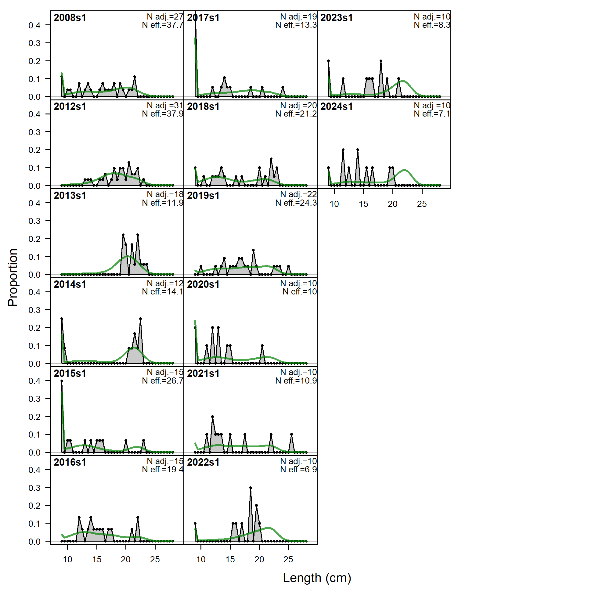
Length comps, whole catch, AT_Survey.
'N adj.' is the input sample size after data-weighting adjustment. N eff. is the calculated effective sample size used in the McAllister-Ianelli tuning method.
file: comp_lenfit_flt4mkt0.png

Pearson residuals, whole catch, AT_Survey (max=13.4)
Closed bubbles are positive residuals (observed > expected) and open bubbles are negative residuals (observed < expected).
file: comp_lenfit_residsflt4mkt0.png
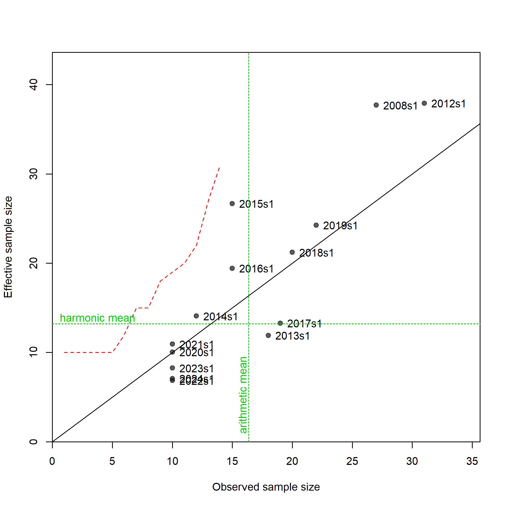
N-EffN comparison, Length comps, whole catch, AT_Survey
file: comp_lenfit_sampsize_flt4mkt0.png

Mean length for AT_Survey with 95% confidence intervals based on current samples sizes.
Francis data weighting method TA1.8: thinner intervals (with capped ends) show result of further adjusting sample sizes based on suggested multiplier (with 95% interval) for len data from AT_Survey:
0.4796 (0.3273-1.1919)
For more info, see
Francis, R.I.C.C. (2011). Data weighting in statistical fisheries stock assessment models. Can. J. Fish. Aquat. Sci. 68: 1124-1138. https://doi.org/10.1139/f2011-025
{kind=link}
{kind=link}
{kind=link}
{kind=link}
{kind=link}
{kind=link}
{kind=link}
{kind=link}